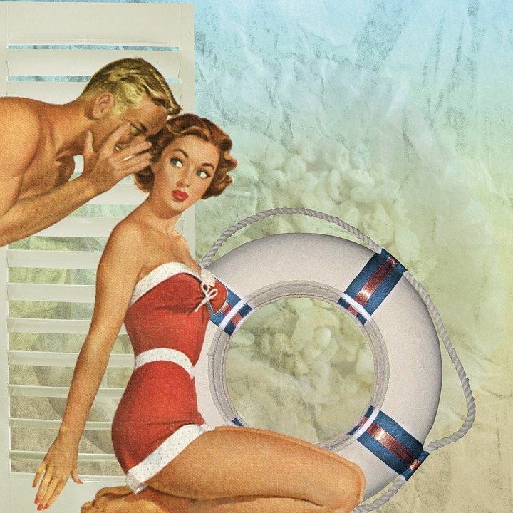

WAVELAND ANTIQUES
W'Land's selection for go to throwback & novelty pieces when you're going for the retro look.
Retro/Vintage
Classic & Nostalgic Pieces


W'Land's selection for go to throwback & novelty pieces when you're going for the retro look.
Air Jordan 1 Mid "Multi Color" via Sneakernews.com
Vintage Tigger Crewneck Sweatshirt (Disney)
Vintage Nike Windbreakers via Upperupper Tokyo
Tour Life:
"Nasty" Nas Tour T Shirt via Urban Outfitters
Vintage Tommy Hilfiger jacket
via F As in Frank (FasinFrankVintage.com)
Vintage Tommy Hilfiger 90s color stripe Polo
via Fader / Photo by: Kadeem Johnson
Vintage Tommy Hilfiger 90s color block hoodieYellow Navy Windbreaker
via Urban Outfitters
Vintage Navy Tommy Hilfiger Sweater
via Nordic Poetry (NordicPoetry.co.uk)
Vintage Tommy Hilfiger hooded coat
via Pinterest, Thehunt.com & Etsy
Vintage Tommy Hilfiger 90s color block jacket
via Poshmark -(user) Culturedmisfit
Vintage Tommy Hilfiger Jean Jacket
via Pinterest, Thehunt.com & F As In Frank(FasinFrankVintage.com)
Vintage Tommy Hilfiger rugby
via F As in Frank (FasinFrankVintage.com)
Kicks
Allen Iverson's signature sneaker "The Question" via Reebok, Sole Collector, Kicks On Fire
(Summit White/Black/ Team Orange) Nike's Air Tekno M2K Casual (Dad Shoe) via Nike & Finish Line
(Collab Sneaker) Supreme x Nike Air Max Tailwind IV
via Nike, Sneakernews.com & Stockx
Pulp Fiction Novelty Tees
Pulp Fiction movie tribute shirt via Urban Outfitters
Pulp Fiction movie Mia Wallace tribute shirt via DHGate.com
(Pulp Fiction) "Be Cool" shirt via Tshirtxy.com
(Pulp Fiction) Jules/Big Kahuna Soda shirt via RageOn.com
(Pulp Fiction) Saint Jules shirt via Ali Express
Vintage 90s Multipattern Romper
Romeo+Juliet Prada insipred "Sacred Heart"
Sacred Heart Hawaiian Grandad shirt as worn by Leonardo Dicaprio in the 1996, film Romeo + Juliet
via Asos, Pinterest, & StoreEnvy.com
Polo Ralph Lauren Snow Beach
Polo Ralph Lauren's icon & vintage Snow Beach Collection Pullover Coat, as worn and made popular by rapper Raekwon of the Wu-Tang Clan, in the 1994 video for "Can It Be All So Simple"
via Ralph Lauren, StockX, & Bonanza.com
Point Break tribute T shirts via Redbubble.com via (user) American Artist